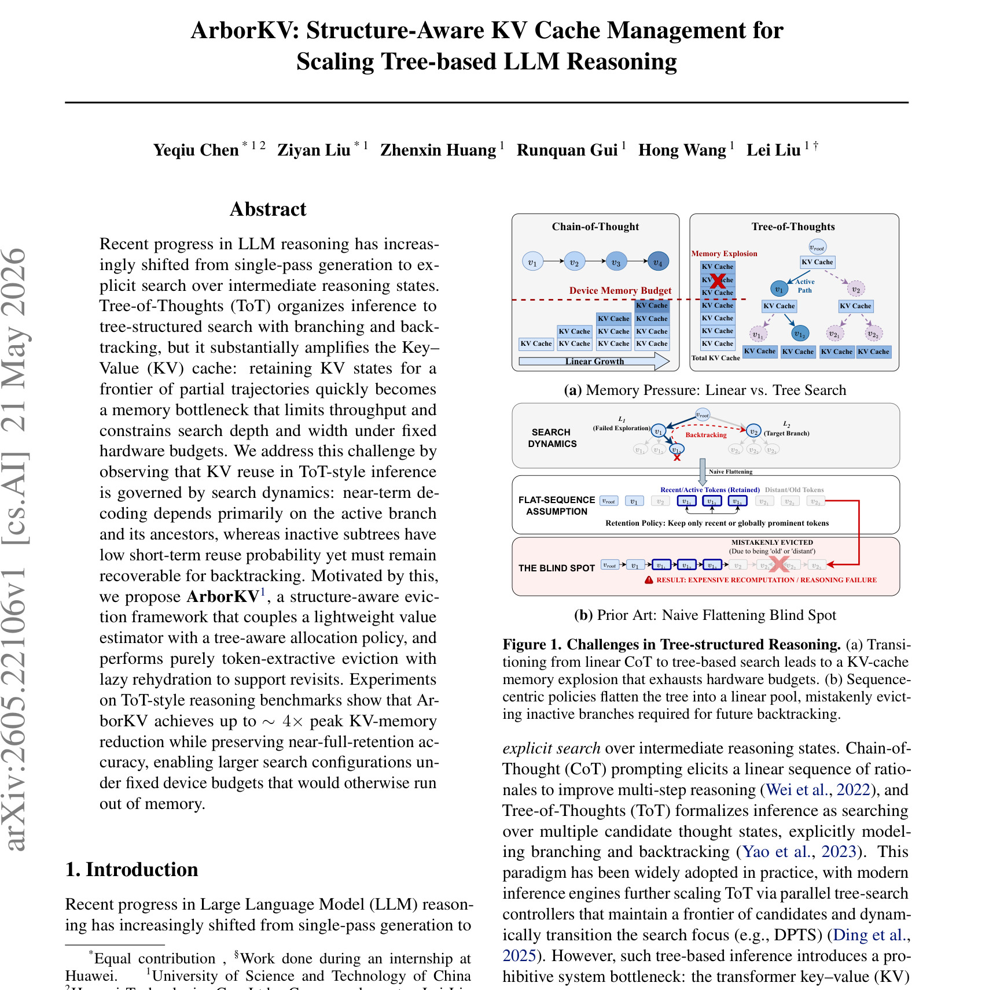
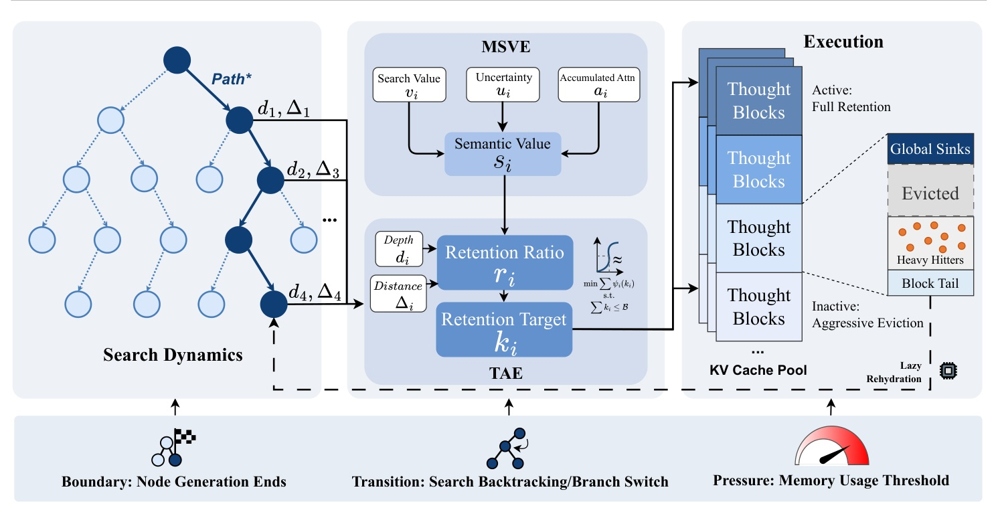
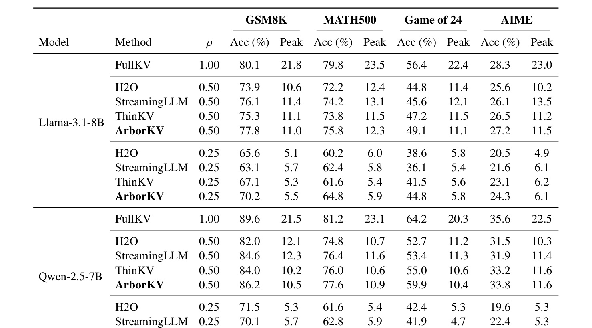
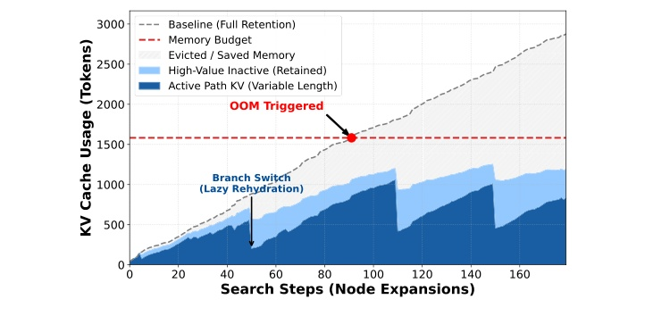

ArborKV：ArborKV: Structure-Aware KV Cache Management for Scaling Tree-based LLM Reasoning
这里精读一篇 2026-05-21 公开在 arXiv 的论文《ArborKV: Structure-Aware KV Cache Management for Scaling Tree-based LLM Reasoning》。中文可以叫《面向树状大模型推理扩展的结构感知 KV Cache 管理》。论文链接：arXiv:2605.22106。作者为 Yeqiu Chen、Ziyan Liu、Zhenxin Huang、Runquan Gui、Hong Wang、Lei Liu；机构/团队记录为多校团队。代码/项目页本轮未核验到独立仓库。本地 PDF 为 多校-ArborKV.pdf。
ArborKV 讨论的是测试时扩展推理的系统瓶颈。Tree-of-Thought、best-first search 和回溯式规划能扩大推理搜索空间，但它们也让 KV cache 从线性历史变成树状 frontier。ArborKV 从搜索树结构出发决定保留、驱逐和恢复哪些 KV，是一篇很典型的 LLM reasoning runtime 论文。
1. 背景和问题
大模型推理正在从单条 Chain-of-Thought 走向测试时搜索。Tree-of-Thought 把中间 reasoning state 组织成树，通过分支、验证、剪枝和回溯寻找更好的解。这样的搜索可以提升复杂数学、规划和组合任务表现，但它对 KV cache 的压力远大于线性生成。线性 CoT 只需要沿着一条序列保留上下文；树搜索会同时维护 active branch、ancestor、inactive subtree 和 frontier，若所有 partial trajectories 的 KV 都保留，显存很快成为瓶颈。
传统 KV 管理方法多面向线性序列。例如 H2O 关注 heavy hitters，StreamingLLM 关注 attention sink 和最近 token，ThinKV 关注 thought-aware compression，但它们基本假设解码沿一条路径前进。树搜索的复用模式不同：短期生成依赖 active path 和 ancestors，inactive branch 可能暂时不用，却可能在 backtracking 后重新变得关键。如果按线性最近性驱逐，系统可能删除未来需要恢复的分支，导致重复计算或推理失败。
1.2 线性缓存策略在树搜索中的失效

Figure 1（原文图 1）把问题画得很清楚。上半部分比较 Chain-of-Thought 与 Tree-of-Thought：线性 CoT 的 KV cache 随生成长度增长，而 ToT 中多个分支和活跃路径会让总 KV cache 快速超过 device memory budget。下半部分展示 naive flattening blind spot：若把树状搜索压平成一个序列，只保留 recent 或 globally prominent tokens，系统可能误删 old/distant 但未来回溯需要的 thought block，结果是 expensive recomputation 或 reasoning failure。这个图支撑了 ArborKV 的核心假设：树搜索中的 KV 价值不能只由 token 级注意力或时间位置决定，还要由它在搜索树中的拓扑位置和未来回溯概率决定。
2. 方法
2.1 MSVE、TAE 与 lazy rehydration
ArborKV 把缓存单元定义为 thought block，即代表离散推理步骤的连续 token span。它用 Multi-Signal Value Estimation 评估每个 thought block 的价值，信号包括 search value、uncertainty、accumulated attention 等；再用 Tree-Aware Allocation 根据 active path、ancestors、inactive subtree 和全局预算分配 retention target；最后执行 token-extractive eviction，并在需要回溯时 lazy rehydration。整个流程不要求重新训练模型，而是在 inference runtime 层管理 KV。

Figure 2（原文图 2）展示 ArborKV 的三个阶段。左侧是 search dynamics，标出 active path 和分支切换；中间是 MSVE 和 TAE，前者把 search value、uncertainty、accumulated attention 融合成 semantic value，后者根据 depth、distance 等树结构信息决定 retention ratio 和 retention target；右侧是 execution，KV cache pool 被分成 active/full retention、inactive/aggressive eviction、global sinks、evicted、block tail 和 lazy rehydration 等状态。图下方的事件触发器也很重要：node generation ends、search backtracking/branch switch、memory usage threshold 都会触发策略更新。它说明 ArborKV 不是静态剪枝，而是随树搜索状态动态调整缓存。
2.2 Multi-Signal Value Estimation
MSVE 的目标是估计 thought block 对未来推理的价值。单一 attention 或最近性信号不足以处理树搜索：某个 block 可能当前 attention 不高，但作为 ancestor 会被多个分支复用；某个 inactive branch 当前不用，但回溯后会重新成为 active path。MSVE 因此融合搜索值、不确定性和累计注意力，并通过离线 calibration 学习参数。论文描述中，calibration 使用 full-retention trajectories 做 leave-one-out masking，观察移除某个 block 对答案准确率的影响，从而估计 block 价值。
2.3 Tree-Aware Allocation 与 lazy rehydration
TAE 将预算分配与树拓扑绑定。Active path 和 ancestors 优先保留，inactive subtree 可以更激进地驱逐，但不能不可恢复。token-extractive eviction 保留必要 token 而不是生成摘要，减少语义改写风险；lazy rehydration 则在 backtracking 或 branch switch 需要时恢复被驱逐内容。这个设计承认显存无法全留，但也不把删除变成单向操作。它与普通 KV compression 的差别在于，ArborKV 管理的是搜索过程中可恢复的结构化状态，而不是单条序列上的 token 重要性列表。
3. 实验结果
3.1 设置与基线
实验在 GSM8K、MATH500、Game of 24、AIME 上评估，模型包括 Llama-3.1-8B-Instruct 和 Qwen2.5-7B-Instruct，硬件为单张 NVIDIA RTX 4090 24GB，FP16 推理。作者设计 Config-S budget sweep 和 Config-L fixed-memory scaling 两类设置，并比较 FullKV、H2O、StreamingLLM、ThinKV 和 ArborKV。指标包括 accuracy、peak CUDA memory、peak cached tokens、latency 和 rehydration count。
3.2 主结果：准确率和峰值显存

Table 1（原文表 1）展示 Config-S 下不同模型、任务和预算的 accuracy 与 peak memory。FullKV 通常准确率高但显存压力大；H2O、StreamingLLM、ThinKV 等线性策略在低预算下会出现较大质量损失；ArborKV 在相同预算下保持更接近 FullKV 的准确率，同时显著降低峰值显存。读表时不能只看最高 accuracy，还要看 accuracy 与 peak memory 的组合。ArborKV 的目标不是在无限显存下超过 FullKV，而是在固定 24GB 级硬件约束下让更宽或更深的树搜索可运行。Game of 24 和 AIME 这类更依赖回溯或复杂搜索的任务尤其能体现树结构信息的价值。
3.3 运行时行为：OOM、active path 与 lazy rehydration

Figure 3（原文图 3）展示搜索步骤中的 KV cache usage。灰色 full-retention baseline 随节点扩展持续增长并触发 OOM；ArborKV 用深蓝色 active path 和浅蓝色 inactive context 控制显存，曲线中出现的 sharp drops 对应 branch switch 和 lazy rehydration 等事件。红色 OOM threshold 说明在同样搜索进程下，ArborKV 能把显存维持在预算内。这个图补充了 Table 1 没有展示的动态过程：方法不是简单压低平均显存，而是在分支切换时主动释放低复用上下文，并在需要回溯时恢复。对 runtime 系统而言，这种动态可解释性很重要，因为它帮助定位 latency overhead 和 rehydration 次数是否会抵消显存收益。
3.4 消融与可扩展性
论文还分析 MSVE 信号、TAE 组件和 lazy rehydration。移除拓扑 proximity、只用单一价值信号或禁用 rehydration 都会损害质量或增加恢复成本。固定内存扩展实验说明 ArborKV 的显存节省可以转化为更大的 branching 或 expansion 设置，而不只是让同一设置更省内存。这个结果对 ToT 推理很关键：如果节省显存不能换来更大搜索空间或更稳 accuracy，它的系统价值会有限。
3.5 读系统结果时要同时看延迟
ArborKV 的显存收益很直观，但系统论文不能只看 peak memory。lazy rehydration 会带来恢复开销，事件驱动策略也需要维护树状态和缓存元数据。论文把 latency、peak cached tokens 和 rehydration count 放到补充统计里，是为了说明显存降低不是靠隐藏计算成本换来的。复现时如果只报告 accuracy 和 GiB，很可能遗漏 P95 延迟和吞吐影响。对生产推理服务而言，允许更大搜索树是一方面，能否在 SLA 内稳定完成才是另一半。
4. 总结
4.1 我的判断
ArborKV 的贡献在于把树搜索的结构直接写进 KV 管理策略。很多 reasoning 论文默认可以无限保留中间状态，但真实部署受限于显存、延迟和吞吐。ArborKV 说明测试时扩展不只是 prompt 或搜索算法问题，也是 runtime memory allocation 问题。它把 active path、ancestor、inactive subtree 和 branch switch 这些搜索概念变成缓存策略的一部分，这比单纯 token-level salience 更适合 ToT。
我认为它最适合需要显式搜索和回溯的任务，而不是所有长上下文生成。若模型只是线性生成长文本，传统 streaming 或 heavy hitter 策略可能已经足够；ArborKV 的额外控制逻辑在 backtracking-heavy workload 中价值更大。工程采用时应先判断自己的推理链路是否真的有树状 frontier 和回溯需求。
4.2 工程启发与复现建议
复现可以从一个可控 ToT controller 开始，固定模型、prompt、branching factor、depth、Nexpand 和 decoding hyperparameters，只替换 KV retention policy。第一版先实现 thought block 边界、active path/ancestor/inactive branch 标记和 budget allocation；第二版加入 MSVE 信号和离线 calibration；第三版再做 lazy rehydration 与事件驱动更新。评估时必须同时记录 accuracy、peak memory、latency、rehydration count 和 OOM rate，否则容易把显存节省换来的延迟开销忽略掉。
如果用于生产系统，还要考虑和底层推理框架的接口。KV cache pool、block tail、global sinks 和 rehydration 需要与 allocator、batching、paged KV 或 speculative decoding 兼容。ArborKV 论文展示了策略价值，但真正上线还要处理工程细节：如何标记 thought block，如何在多请求并发下维护树状态，如何避免 rehydration 导致 P95 延迟尖峰。
4.3 局限与后续跟进
局限方面，第一，方法针对树状搜索，若任务没有频繁 branch switch 或 backtracking，收益可能不明显。第二，MSVE calibration 需要 full-retention trajectories 和 leave-one-out masking，准备成本不可忽略。第三，lazy rehydration 降低 OOM 风险，但可能引入额外延迟和实现复杂度。第四，论文未核验到独立代码仓库，实际与 vLLM、PagedAttention 或其他推理框架的集成难度仍需确认。
后续跟进应看三点：一是作者是否公开实现和 controller/verifier 设置；二是 ArborKV 与 PagedAttention、speculative decoding、batch serving 结合后的真实吞吐表现；三是它在更大模型、更长搜索树和多用户并发下是否仍能保持接近 FullKV 的准确率与稳定延迟。
4.4 和长上下文压缩的区别
ArborKV 容易被归类为长上下文 KV 压缩，但它解决的问题更窄也更明确。长上下文压缩通常处理一条长序列，目标是在保留关键信息的同时降低缓存；ArborKV 处理的是多分支搜索树，目标是在 active path、ancestor 和 inactive branch 之间分配预算，并支持回溯恢复。这个区别会影响适用场景。如果一个应用只是长文档问答或持续对话，树拓扑信号很弱，ArborKV 的复杂性可能不划算；如果应用是数学搜索、代码规划、工具调用树或多候选 verifier，树结构就会成为缓存策略的核心信息。